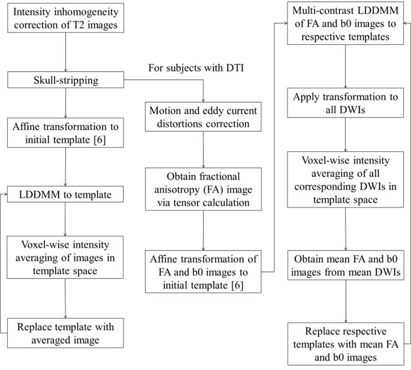
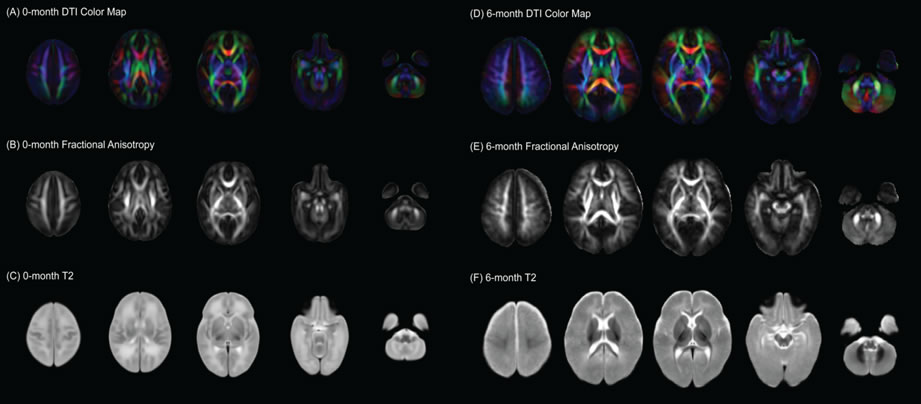

Laboratory For Medical Image Data Sciences
Infant Atlases
Magnetic resonance imaging (MRI) is an increasingly popular method for detecting subtle anatomic changes and abnormalities in the neonatal brain. Brain atlases provide a standard space for image processing in these studies. Due to rapid morphological and MRI contrast changes in the neonatal brain, however, single time-point atlases are undesirable as they cannot sufficiently represent the morphology at different developmental stages. Using data from healthy neonates, we present diffusion tensor imaging (DTI) and structural T2 atlases of the 0-month and 6-month brain.
DTI and structural T2 MRI scans were obtained for healthy neonates with gestational age >36 weeks, birth weight >2kg and the APGAR score >7.
Table1. Number of subjects used for atlas generation.


Figure 1. Example of single subject images at different time points.
All atlases were generated with an iterative atlas generation procedure using large deformation diffeomorphic metric mapping (LDDMM).

Figure 2. Pipeline for atlas generation.
Atlases generated at different time-points were dramatically different from each other in terms of overall size, shape and image contrasts. These differences demonstrated the rapid development of the neonatal brain involving overall growth, changes in morphology and white matter myelination.

Figure 3. Infant atlases at 0-month and 6-month.